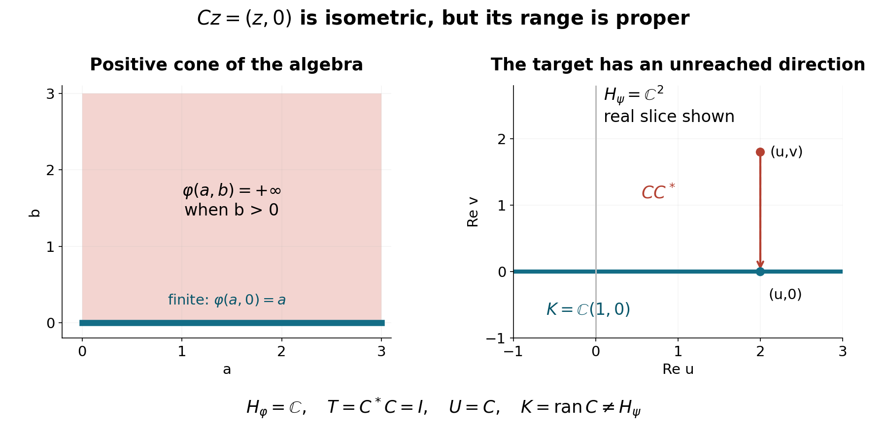

Comparing weights through their finite-energy vectors
Self-checked by the writing AI.
This unit constructs the bounded comparison operator for weights. Its setting is an arbitrary von Neumann algebra, including algebras with no faithful normal state. The construction also works for weights which are not faithful, normal, or semifinite. These extra freedoms concern this bounded comparison theorem; they do not change the hypotheses of later modular theorems.
The organizing object is the entire cone of dominated linear forms on a weight's finite domain. We prove its correspondence with the GNS commutant before comparing two actual weights. A free comparison for the factorization and positive-cone additivity is Brent Nelson's lecture notes, with exact passages given at the end. The completely positive predual-valued map and the opposite-weight theorem remain separate obligations.
Conventions and the exact comparison problem
Inner products are linear in the first variable. Fix a weight \(\varphi:M_+\to[0,\infty]\), and write
\[ \mathfrak n_\varphi=\{x:\varphi(x^*x)<\infty\},\qquad \mathfrak m_\varphi=\operatorname{span}\{y^*x:x,y\in\mathfrak n_\varphi\}. \]The construction in OA-MOD-WG supplies a positive linear extension of \(\varphi\) to \(\mathfrak m_\varphi\), a Hilbert space \(H_\varphi\), a dense-range map \(\Lambda_\varphi\), and a unital representation \(\pi_\varphi\) with
\[ \langle\Lambda_\varphi(x),\Lambda_\varphi(y)\rangle=\varphi(y^*x),\qquad \pi_\varphi(a)\Lambda_\varphi(x)=\Lambda_\varphi(ax). \]In particular \(\mathfrak m_\varphi^+=\mathfrak m_\varphi\cap M_+=\{a\in M_+:\varphi(a)<\infty\}\), and every element of \(\mathfrak m_\varphi\) is a complex linear combination of this cone. These are algebraic domains, not norm closures.
Let \(\mathcal D_\varphi\) be the cone of positive linear forms \(\ell:\mathfrak m_\varphi\to\mathbb C\) such that, for some finite \(c\geq0\),
\[ 0\leq\ell(a)\leq c\varphi(a)\quad(a\in\mathfrak m_\varphi^+). \]Positivity refers to the inherited cone above. It does not assert that \(\ell\) is bounded for the operator norm, or that it has already been extended to a normal weight on all of \(M_+\). The order on these forms is positivity of their difference on this cone.
The complete algebraic GNS inputs are Domain algebra and its positive cone, Linear extension without infinite subtraction, Cauchy-Schwarz and the null ideal and The GNS construction for an arbitrary weight: the exact finite positive cone, linear extension, null quotient, Hilbert completion and bounded left representation. No normality theorem for that representation is needed here.
The bounded prerequisite boundary proves Hilbert completion, continuous extension, projections, Riesz representation for bounded forms, adjoints and bounded positive square roots. Finite-vector approximation and the bicommutant proves the bicommutant theorem; Bounded increasing positive nets have strong suprema proves bounded monotone-net convergence; Supports from bounded resolvent cutoffs identifies support projections; and Polar decomposition and its regularized limit proves polar decomposition inside the algebra. DW-04 constructs the polar map between its two Hilbert spaces directly. SS1 supplies the arbitrary-index weighted sequence spaces in the models. As in WG-001, finite-coordinate approximation follows directly from the supremum defining a summable nonnegative family.
A factorization inside the algebra
Lemma. If \(x,y\in M\) and \(y^*y\leq x^*x\), there is a unique contraction \(v\in M\) which vanishes on \(\overline{xH}^{\perp}\) and satisfies \(y=vx\), in any faithful concrete realization \(M\subseteq B(H)\).
Proof. On \(xH\) define \(x\xi\mapsto y\xi\). The inequality says both that this is well defined and that its norm is at most one. Extend it continuously to \(\overline{xH}\), and set it equal to zero on the orthogonal complement. This proves existence and uniqueness in \(B(H)\). Every unitary \(u\in M'\) preserves \(\overline{xH}\); because \(x,y\) commute with \(u\), both \(v\) and \(uvu^*\) have the prescribed properties. Thus \(v\) commutes with every unitary of \(M'\). Every element of a unital C*-algebra is a linear combination of unitaries: a self-adjoint contraction \(b\) is the real part of \(b+i(1-b^2)^{1/2}\). Consequently \(v\in M''=M\). The square root is supplied by BK-01 and the bicommutant identity by BK-02, both with complete preceding proofs. \(\square\)
For \(a,b\geq0\) put \(d=a+b\) and \(p=s(d)\), the projection onto \(\overline{dH}\). Applying the lemma to \(a^{1/2},d^{1/2}\) and \(b^{1/2},d^{1/2}\) gives contractions \(v,w\in M\) with
\[ a^{1/2}=vd^{1/2},\quad b^{1/2}=wd^{1/2},\quad v=vp,\quad w=wp,\quad v^*v+w^*w=p. \]To verify the last identity, its quadratic form agrees with that of \(p\) on \(d^{1/2}H\), by \(a+b=d\); continuity extends the equality to \(pH\). Both sides vanish on \((1-p)H\). This argument needs neither an inverse of \(d\) nor a positive lower bound for it.
The commutant correspondence
Theorem. There is an additive, positively homogeneous order isomorphism
\[ \pi_\varphi(M)'_+\longleftrightarrow\mathcal D_\varphi,\qquad T\longmapsto\ell_T, \]uniquely characterized by
\[ \ell_T(y^*x)=\langle T\Lambda_\varphi(x),\Lambda_\varphi(y)\rangle \quad(x,y\in\mathfrak n_\varphi). \]Moreover \(T\leq cI\) if and only if \(\ell_T\leq c\varphi\) on \(\mathfrak m_\varphi^+\). Thus the least admissible comparison constant is \(\|T\|\). The assertion includes the zero Hilbert space, where both cones consist only of zero.
Proof, from forms to operators. For \(\ell\in\mathcal D_\varphi\), positivity applied to \((x+zy)^*(x+zy)\), for every \(z\in\mathbb C\), gives
\[ |\ell(y^*x)|^2\leq\ell(x^*x)\ell(y^*y) \leq c^2\|\Lambda_\varphi(x)\|^2\|\Lambda_\varphi(y)\|^2. \]For completeness, when \(\ell(y^*y)>0\), minimize this quadratic polynomial in \(z\); when that diagonal term is zero, varying the magnitude and phase of \(z\) forces the cross term to vanish. The inequality shows that the expression is independent of null representatives and defines a bounded sesquilinear form on \(\Lambda_\varphi(\mathfrak n_\varphi)\). It extends uniquely to \(H_\varphi\). The Hilbert-space representation theorem for bounded sesquilinear forms gives a unique positive operator \(T\) with \(0\leq T\leq cI\).
For \(a\in M\) and \(x,y\in\mathfrak n_\varphi\), associativity gives
\[ \begin{aligned} \langle T\pi_\varphi(a)\Lambda_\varphi(x),\Lambda_\varphi(y)\rangle &=\ell(y^*ax)\\ &=\langle T\Lambda_\varphi(x),\pi_\varphi(a^*)\Lambda_\varphi(y)\rangle\\ &=\langle\pi_\varphi(a)T\Lambda_\varphi(x),\Lambda_\varphi(y)\rangle. \end{aligned} \]The test vectors form a dense subspace, so \(T\pi_\varphi(a)=\pi_\varphi(a)T\). This proves membership in the commutant without any appeal to a modular group.
Proof, from operators to forms. Fix \(T\in\pi_\varphi(M)'_+\). For finite-weight positive \(a\), define
\[ f_T(a)=\langle T\Lambda_\varphi(a^{1/2}),\Lambda_\varphi(a^{1/2})\rangle. \]We must prove additivity; merely writing a formula on products would not prove independence of their decompositions. Let \(a,b\in\mathfrak m_\varphi^+\), and use \(d,p,v,w\) from OA-MOD-DW-02. Here \(d^{1/2}\in\mathfrak n_\varphi\). Put \(\zeta=\Lambda_\varphi(d^{1/2})\). Then \(\pi_\varphi(p)\zeta=\zeta\) and
\[ \begin{aligned} f_T(a)+f_T(b) &=\langle T\pi_\varphi(v)\zeta,\pi_\varphi(v)\zeta\rangle +\langle T\pi_\varphi(w)\zeta,\pi_\varphi(w)\zeta\rangle\\ &=\langle T\zeta,\pi_\varphi(v^*v+w^*w)\zeta\rangle =f_T(d). \end{aligned} \]Homogeneity follows from the square root of a scalar. Thus \(f_T\) extends to a real linear form on \(\mathfrak m_{\varphi,\mathrm{sa}}\): assign \(f_T(a)-f_T(b)\) to \(a-b\). If \(a-b=a'-b'\), the equality \(a+b'=a'+b\) and additivity prove independence. Complexification gives a positive linear form \(\ell_T\) on \(\mathfrak m_\varphi\). Also
\[ 0\leq f_T(a)\leq\|T\|\varphi(a). \]If \(x\in\mathfrak n_\varphi\), take its polar decomposition \(x=u|x|\) in \(M\). Then \(\Lambda_\varphi(x)=\pi_\varphi(u)\Lambda_\varphi(|x|)\), and \(u^*u\) fixes \(|x|\). Commutation with \(T\) yields
\[ \langle T\Lambda_\varphi(x),\Lambda_\varphi(x)\rangle=f_T(x^*x). \]Polarization now proves the formula for \(y^*x\). Uniqueness holds because these products span \(\mathfrak m_\varphi\), and their GNS vectors are dense. The two constructions are inverse. Addition and scalar multiplication follow from the defining pairings. Finally positivity of \(\ell_{T_2}-\ell_{T_1}\) is equivalent to nonnegativity of the quadratic form of \(T_2-T_1\) on a dense subspace, hence on all of \(H_\varphi\). Apply this to \(cI-T\) to obtain the bound and the optimal constant. \(\square\)
Comparing two weights and the precise target space
Theorem. Let \(\psi\) be another weight on \(M\), with \(\psi\leq c\varphi\) on \(M_+\) for a finite \(c>0\). There is a unique bounded map
\[ C_{\psi\mid\varphi}:H_\varphi\longrightarrow H_\psi, \qquad C_{\psi\mid\varphi}\Lambda_\varphi(x)=\Lambda_\psi(x) \quad(x\in\mathfrak n_\varphi), \]with norm at most \(\sqrt c\). It intertwines the representations, and
\[ T_{\psi\mid\varphi}=C_{\psi\mid\varphi}^*C_{\psi\mid\varphi}\in\pi_\varphi(M)'_+, \quad \psi(y^*x)=\langle T_{\psi\mid\varphi}\Lambda_\varphi(x),\Lambda_\varphi(y)\rangle. \]The range closure is exactly \(K=\overline{\Lambda_\psi(\mathfrak n_\varphi)}\subseteq H_\psi\). If \(C=UT^{1/2}\) is its polar decomposition, then \(U\) is a unitary from \(s(T)H_\varphi\) onto \(K\), and is zero on \(\ker T\). These two subspaces reduce the corresponding representations, and \(U\) intertwines their restrictions.
Proof. Domination gives \(\mathfrak n_\varphi\subseteq\mathfrak n_\psi\) and \(\|\Lambda_\psi(x)\|^2\leq c\|\Lambda_\varphi(x)\|^2\). Consequently the displayed assignment is well defined even for nonfaithful weights and extends from a dense domain. Its range closure is \(K\) by construction. On the dense GNS domain,
\[ C\pi_\varphi(a)\Lambda_\varphi(x) =\Lambda_\psi(ax)=\pi_\psi(a)C\Lambda_\varphi(x). \]Boundedness extends this identity to all vectors. Taking adjoints and using the identity for \(a^*\) shows that \(C^*\) intertwines in the reverse direction, so \(C^*C\) commutes with \(\pi_\varphi(M)\). The pairing formula is immediate. It agrees with OA-MOD-DW-03 applied to \(\psi|_{\mathfrak m_\varphi}\).
Here the polar map can be constructed without assuming a theorem for operators between different spaces. Put \(A=(C^*C)^{1/2}\) on \(H_\varphi\). On its range define \(U(A\xi)=C\xi\). The equality \(\|A\xi\|^2=\langle C^*C\xi,\xi\rangle=\|C\xi\|^2\) proves both well-definedness and isometry. Extend to \(\overline{\operatorname{ran}A}=(\ker A)^\perp=s(T)H_\varphi\), and set \(U=0\) on \(\ker A=\ker C\). The extension has closed range containing the dense subset \(\operatorname{ran}C\) of \(K\), so its range is precisely \(K\). It is therefore unitary between the two stated closed subspaces, and \(C=UA\). Agreement on \(\operatorname{ran}A\), together with zero on its orthogonal complement, proves uniqueness.
The closed subspaces \(\ker C\) and \(K\) are invariant under the representations and their adjoints. Therefore their orthogonal projections commute with these representations. Since \(T^{1/2}\) also commutes with \(\pi_\varphi(M)\), the equality \(U\pi_\varphi(a)T^{1/2}\xi=\pi_\psi(a)UT^{1/2}\xi\) holds first on \(\operatorname{ran}T^{1/2}\), and then by continuity on its closure \(s(T)H_\varphi\). Both sides vanish on its orthogonal complement. The initial and final subspaces of a polar decomposition give the claimed unitary. \(\square\)
Do not replace \(K\) by \(H_\psi\) in this level of generality. If \(\varphi\) is zero at zero and infinite at every nonzero positive element, then \(\mathfrak n_\varphi=\{0\}\), while every weight \(\psi\) satisfies \(\psi\leq\varphi\). The comparison map is zero even when \(H_\psi\neq0\). This also shows why restriction to a finite domain need not determine the whole weight.
Increasing comparisons and their topology
Proposition. Let \((\ell_i)\) be an increasing net in \(\mathcal D_\varphi\), all bounded above by \(c\varphi\) on \(\mathfrak m_\varphi^+\), and let \(T_i\) be their corresponding operators. There is \(T\in\pi_\varphi(M)'_+\) such that \(T_i\to T\) strongly. Its form satisfies
\[ \ell_T(a)=\sup_i\ell_i(a)\quad(a\in\mathfrak m_\varphi^+),\qquad \ell_i(y^*x)\longrightarrow\ell_T(y^*x). \]Proof. We have \(0\leq T_i\leq T_j\leq cI\) when \(i\leq j\). The increasing scalar nets \(\langle T_i\xi,\xi\rangle\) have finite limits. Polarization defines a bounded positive sesquilinear form with these diagonal values, hence an operator \(T\), with \(T-T_i\geq0\) and \(T\leq cI\). Functional calculus gives
\[ \|(T-T_i)\xi\|^2\leq c\langle(T-T_i)\xi,\xi\rangle\longrightarrow0. \]Thus convergence is strong. Taking strong limits in \(T_i\pi_\varphi(a)=\pi_\varphi(a)T_i\) proves commutation. The defining pairings, with \(x=a^{1/2}\) for positive \(a\), prove the assertions. In general this is not convergence in operator norm. \(\square\)
An example beyond countable measure models
Let \(I\) be any set, possibly uncountable, and \(M=\ell^\infty(I)\). Set
\[ \varphi(a)=\sum_{i\in I}a_i:=\sup_{F\subset I\text{ finite}}\sum_{i\in F}a_i \quad(a\geq0). \]This is a concrete von Neumann algebra in its multiplication representation on \(\ell^2(I)\): commuting with all coordinate projections forces a bounded operator to be diagonal, and bounded diagonal operators are exactly these multipliers. Thus \(M'=M\). The finite-support density needed in that argument was proved in WG-001.
This weight is faithful. It is normal: for an increasing bounded net \(a_\alpha\uparrow a\), a finite sum commutes with the increasing supremum, and the two suprema over \(F\) and \(\alpha\) commute. It is semifinite: \(a1_F\uparrow a\), and each \(a1_F\) has finite weight. Its GNS space is \(\ell^2(I)\), with the multiplication representation and \(\Lambda_\varphi(x)=x\) for \(x\in\ell^2(I)\cap\ell^\infty(I)\). Finite-support vectors prove density. There is no countability condition on \(I\).
For any family \(0\leq r_i\leq c\), the normal semifinite weight \(\psi(a)=\sum_i r_i a_i\) satisfies \(\psi\leq c\varphi\). Under the isometry from \(H_\psi\) to \(\ell^2(\{i:r_i>0\})\) induced by \(x\mapsto(\sqrt{r_i}x_i)_i\), the comparison map is multiplication by \(\sqrt r\), and \(T_{\psi\mid\varphi}\) is multiplication by \(r\) on \(\ell^2(I)\). Zero coordinates of \(r\) give its kernel. The semifiniteness and normality proofs are the same finite-subset argument, and faithfulness holds exactly when every \(r_i>0\).
Taking \(r\equiv1\) on an uncountable \(I\) makes clear why this is weight theory rather than a hidden faithful-state construction. Indeed every positive normal functional on \(\ell^\infty(I)\) has summable coordinate masses and hence at most countably many nonzero masses; it cannot be faithful when \(I\) is uncountable. To see the assertion directly, apply normality to the increasing finite coordinate projections and bound the number of masses at least \(1/n\).
A nonzero comparison with a proper target. On \(M=\mathbb C^2\), write positive elements as \((a,b)\) with \(a,b\ge0\), and define
\[ \varphi(a,b)= \begin{cases}a,&b=0,\\+\infty,&b>0,\end{cases} \qquad \psi(a,b)=a+b. \tag{DW.1} \]Each is a weight: a sum has second coordinate zero exactly when both summands do, and positive homogeneity follows with \(0\cdot\infty=0\). We have \(\psi\le\varphi\). The finite left ideals are \(\mathfrak n_\varphi=\mathbb C(1,0)\) and \(\mathfrak n_\psi=\mathbb C^2\), with zero null ideals. Their inner products give \(H_\varphi=\mathbb C\), \(H_\psi=\mathbb C^2\), and
\[ Cz=(z,0),\qquad C^*(u,v)=u,\qquad T=C^*C=I_{\mathbb C},\qquad K=\mathbb C(1,0)\subsetneq\mathbb C^2. \tag{DW.2} \]Thus even an injective comparison with \(T=I\) need not cover the target GNS space. Here \(U=C\), and \(CC^*\) is projection onto \(K\). Both weights are faithful and normal: for \(\varphi\), if an increasing positive net has positive second-coordinate supremum, some term already has positive second coordinate; otherwise the weight is its first coordinate. Finite-domain density fails for \(\varphi\), since its finite linear domain is the proper closed first-coordinate ideal. This isolates the missing semifiniteness without a zero source Hilbert space.

The first panel shows the finite positive cone of \(\varphi\) in (DW.1). The second shows the real coordinate slice of \(H_\psi=\mathbb C^2\); its horizontal line is the real slice of \(K\). The complex-linear maps are exactly (DW.2), not merely their drawing. Projection sends \((u,v)\) to \((u,0)\), while the comparison reaches only \(K\). The proof above, together with DW-04, establishes these identities. Reproduce the figure.
Problems and worked solutions
Problem 1. If \(\psi\leq c\varphi\) and \(\chi\leq d\psi\), prove a chain rule for the comparison maps. Decide whether it gives the product of two positive derivatives.
Solution. On \(\Lambda_\varphi(\mathfrak n_\varphi)\), the composite \(C_{\chi\mid\psi}C_{\psi\mid\varphi}\) sends \(\Lambda_\varphi(x)\) to \(\Lambda_\chi(x)\); all expressions are defined by the nested finite domains. Density and boundedness give
\[ C_{\chi\mid\varphi}=C_{\chi\mid\psi}C_{\psi\mid\varphi},\qquad T_{\chi\mid\varphi}=C_{\psi\mid\varphi}^*T_{\chi\mid\psi}C_{\psi\mid\varphi}. \]The second identity is a compression between different Hilbert spaces. The bare product \(T_{\chi\mid\psi}T_{\psi\mid\varphi}\) is generally not even typed.
Problem 2. Give an increasing sequence of dominated forms whose operators converge strongly but not in norm.
Solution. Use \(M=\ell^\infty(\mathbb N)\) and counting weight. Let \(\psi_n(a)=\sum_{i\leq n}a_i\). The derivative is the coordinate projection \(P_n\). For \(\xi\in\ell^2\), \(\|(I-P_n)\xi\|^2=\sum_{i>n}|\xi_i|^2\to0\), but \(\|I-P_n\|=1\). On the finite domain the forms increase to \(\varphi\).
Problem 3. In the same model let \(\psi(a)=\sum_{i\geq1}i\,a_i\). Show precisely where the bounded construction fails and identify its closed unbounded comparison map.
Solution. A coordinate test gives \(\psi(e_i)=i\) and \(\varphi(e_i)=1\), so no finite comparison constant exists. In the common \(\ell^2\) realization the comparison map is multiplication by \(\sqrt i\), with maximal domain \(D(C)=\{\xi:\sum_i i|\xi_i|^2<\infty\}\). If \(\xi_n\to\xi\) and \(C\xi_n\to\eta\) in \(\ell^2\), coordinate convergence gives \(\eta_i=\sqrt i\,\xi_i\); hence \(\xi\in D(C)\) and \(C\xi=\eta\). Thus it is closed. Finite truncations converge in the graph norm, so they form a core. The associated positive operator is multiplication by \(i\), with domain \(\{\xi:\sum_i i^2|\xi_i|^2<\infty\}\). This verifies the unbounded model only; a general spatial-derivative existence theorem requires additional work.
To check the operator-domain assertion in Problem 3 directly, testing the adjoint against each coordinate vector forces \(C^*\eta\) to have coordinates \(\sqrt{i}\eta_i\). Such a vector lies in \(\ell^2\) exactly when \(\sum_i i|\eta_i|^2<\infty\); conversely Cauchy–Schwarz verifies the adjoint pairing on that domain. Thus \(C^*=C\). The composition requires both \(\xi\in D(C)\) and \(C\xi\in D(C)\), which gives precisely \(\sum_i i^2|\xi_i|^2<\infty\). Repeating the same coordinate adjoint test for the multiplier \(i\) proves its self-adjointness; its quadratic pairing is nonnegative. No general unbounded-operator product theorem is being assumed.
What has been established, and what is next
The bounded form correspondence, the weight comparison map with its exact range, and monotone strong convergence have complete proofs above. No hypothesis of sigma-finiteness, separability, normality, semifiniteness, or faithfulness was inserted into those three statements. Normality and semifiniteness were proved for the worked model separately.
The symbol \(T_{\psi\mid\varphi}\) here denotes a positive operator in the commutant of a particular GNS representation. It is not the Connes cocycle \([D\psi:D\varphi]_t\), and no centralizer membership or modular covariance is asserted. To reach general relative modular theory the course still owes: common-domain and closability theorems, natural-cone implementation, spatial quadratic forms and their represented operators, modular covariance with the exact analytic domain, and the unbounded weight cocycle identities. These are retained in the curriculum and coverage ledger, not counted as consequences of bounded domination.
Free source comparisons. Brent Nelson, Tomita–Takesaki Theory, Lemma 3.6(i–ii), printed pp. 20–21, proves the bounded factorization in the algebra and the support identity for a sum of squares. Lemma 3.8, p. 22, uses that identity to prove positive-cone additivity for a commutant pairing. DW-02–03 provides those arguments and the scalar order correspondence in full. The statement here is deliberately on the finite algebraic domain of an arbitrary weight. It does not identify every such form with a bounded normal functional on the whole algebra, and it does not import the source's larger completely positive map or normal-weight characterization. The target-space polar map, arbitrary-index models and exact maximal domains are proved directly above.